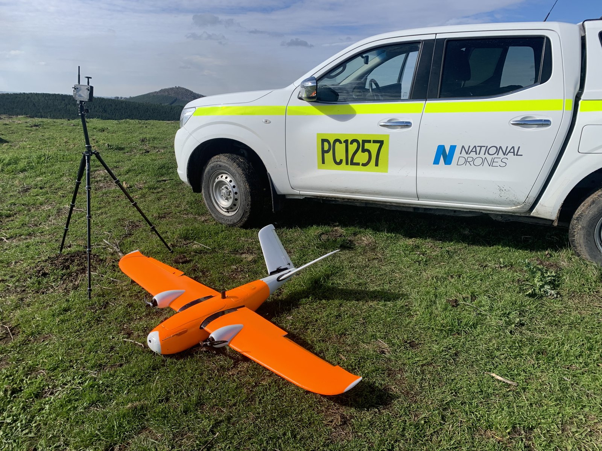
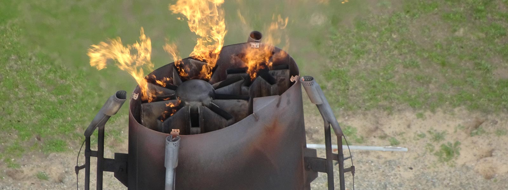
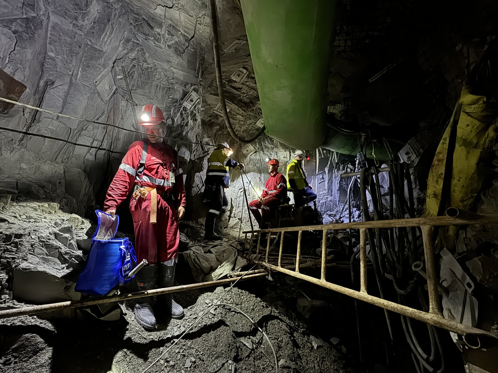
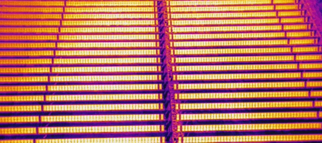
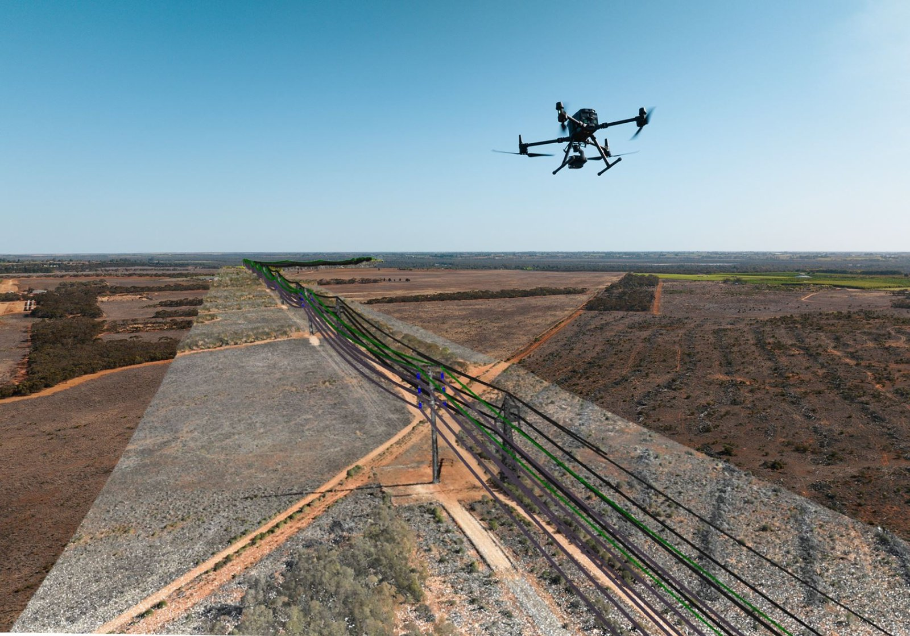
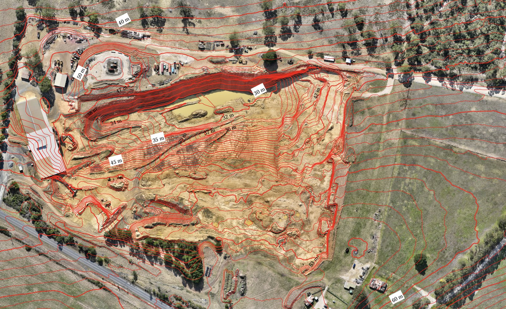

Volume Reporting & Subsidence Monitoring
BHP // Rio Tinto
BARS-Compliant Data Delivery
End-to-end aerial survey programs for Australia's largest mining operations. Deliverables include volumetric stockpile reports, subsidence monitoring datasets, and high-resolution orthomosaics used for mine planning and compliance reporting.
LiDAR and fixed-wing survey methodologies deployed across expansive open-cut and underground operations. All programs designed to meet BARS (Basic Aviation Risk Standard) requirements for airside operations on active mine sites.
Digital Twins & Asset Integrity
Woodside // Origin // Exxon // INPEX // Oceaneering // AECOM
3D Digital Twins & Flare Stack Inspections
Creation of high-fidelity 3D digital twins for refinery and processing facility assets. Active flare stack inspections conducted on live stacks using thermal and RGB sensor payloads, delivering asset-health condition reports that inform maintenance planning and shutdown scheduling.
INPEX Northern Territory facility modelling delivered comprehensive as-built 3D datasets for operational planning and regulatory compliance.

Confined Space & Decommissioning
GPS-denied confined space inspections using Flyability Elios 2 and ScoutDI platforms inside pressure vessels, boilers, and storage tanks. These inspections replace human entry requirements, dramatically reducing risk in hazardous environments.
Refinery decommissioning surveys provide 3D baseline models and progress monitoring datasets for demolition management teams.
Key Projects
Oceaneering -- Longford Flare Stack
Active flare stack inspection at the Longford gas processing facility, delivering thermal and visual condition reports for integrity assessment.
Exxon -- Altona Refinery Demolition
Progressive 3D survey and monitoring of the Altona refinery demolition, providing volumetric change detection and site compliance documentation.
AECOM -- Snowy Hydro Talbingo Dam
High-resolution 3D model of the Talbingo Dam structure for AECOM's engineering assessment and asset management records.
AECOM / Little Creatures Brewery -- Heritage Building & Chimney Inspection
External and internal chimney inspections plus building and roof assessment of the historic 1920s Valley Worsted Mill in Geelong. Detailed 3D model created in a single 4-hour capture, identifying cracking, damaged bricks, loose metalwork, and repainting requirements — eliminating the need for elevated work platforms.
Renewable Energy Asset Surveys
LightSource BP // Goldwind // AGL
Large-Scale Solar Farm Mapping
Aerial survey and mapping programs for two 4,000-hectare solar development sites. Fixed-wing and multirotor platforms deployed for topographic survey, vegetation mapping, and construction progress monitoring across the Sandy Creek and Merriwa projects.

Wind Turbine Blade Inspections
Systematic blade inspections across 74 GE wind turbines at the Ararat Wind Farm. High-resolution RGB capture of each blade face, delivering defect identification reports covering leading-edge erosion, lightning strike damage, and structural cracking.
Additional AGL Projects
AGL Silverton -- 220KV Transmission Line Survey
Aerial survey of the 220KV transmission line corridor, capturing conductor condition, vegetation encroachment, and tower structure data.
AGL Yallourn & Loy Yang -- Shutdown Inspections
Confined space inspections during scheduled shutdowns at the Yallourn and Loy Yang power stations, using Elios 2 for boiler and turbine hall assessments.
HV Network Inspection Platform
PowerCor // Grid Networks
Insite SaaS Platform Deployment
Deployment and operation of the Insite SaaS platform for high-voltage network inspections. Fleet-scale drone operations across transmission and distribution assets, delivering automated defect detection and asset condition reporting through a centralized web platform.
Multi-pilot fleet deployment across regional transmission corridors, with standardized capture workflows feeding directly into the Insite analysis pipeline for utility asset management teams.
Quarterly Volumetrics & Monitoring
Cleanaway // Hi-Quality
Ongoing Volume Reporting Programs
Quarterly aerial survey programs delivering volumetric stockpile and void-space calculations for landfill operations and quarry sites. These long-running programs provide consistent, auditable datasets used for EPA compliance, operational planning, and financial reporting.
Subsidence monitoring programs track ground movement across capped landfill cells and active fill areas. MatterPort 3D capture deployed for indoor facility inspections and equipment condition assessments.